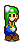

-
Mario #001

O personagem principal da série. Está com frequência em companhia de seu irmão Luigi. Considerado o herói universal do Reino Cogumelo, já salvou diversas donzelas em perigo como Pauline, Peach e Daisy.
-
Luigi #002
Irmão de Mario. Apesar de um pouco medroso, quase sempre está na companhia de seu irmão para combater o perigo quando necessário. Sua primeira aparição foi no jogo Mario Bros. (1983). Depois disso deu as caras em quase todos os jogos da série juntamente com seu irmão.
-
Princesa #003
Princesa Peach é a princesa do Reino Cogumelo com uma variedade de servos. Entre eles, Toads, Koopas, Goombas, Shy Guys e vários outros. Seu mordomo, Toadsworth, tem com ela uma relação muito próxima. Peach é grande amiga da Princesa Daisy.
-
Yoshi #004

Yoshis são dinossauros que vivem na Ilha dos Yoshis. Um Yoshi uma vez ajudou Mario em sua infância levando a ele e a seu irmão quando bebês para seus pais no contexto do jogo Super Mario World 2: Yoshi's Island.
-
Toad #005

Toad é um dos cogumelos servos de Peach, muito chegado a ela e a Mario e Luigi. Vive no Reino Cogumelo no castelo da Peach sempre a disposição.
-
bowser #006
O Rei Bowser Koopa, conhecido no Japão como Koopa, ou somente Bowser, é o principal vilão do universo Mario, consagrada franquia da Nintendo, e também um dos mais famosos vilões da empresa.
-
Kirby #007

Kirby é uma série de jogos eletrônicos de ação e plataforma desenvolvida pela HAL Laboratory e publicada pela Nintendo. A série gira em torno das aventuras do jovem, rosado herói alien titular chamado Kirby enquanto ele luta para salvar seu lar no distante planeta de Pop Star de diversas ameaças.
-
Donkey #008
Donkey Kong é um gorila que esteve com Mario desde sua primeira aparição, no jogo de sua primeira aparição Donkey Kong é o inimigo de Mario, no jogo Donkey Kong se caracteriza por jogar barris em Mario, que deve desviá-los.